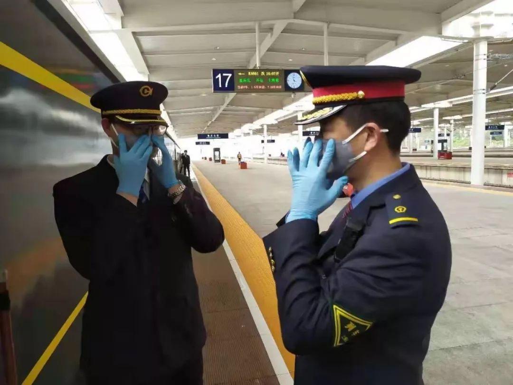
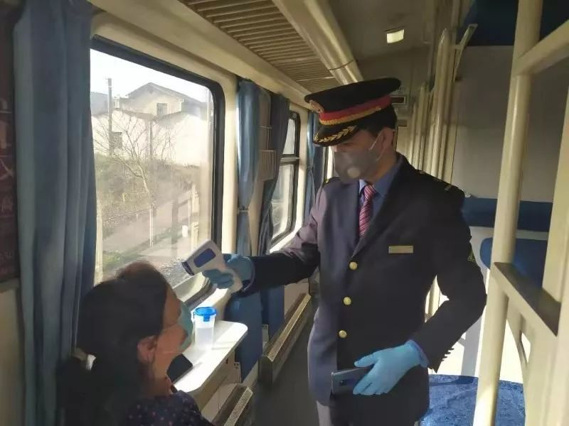
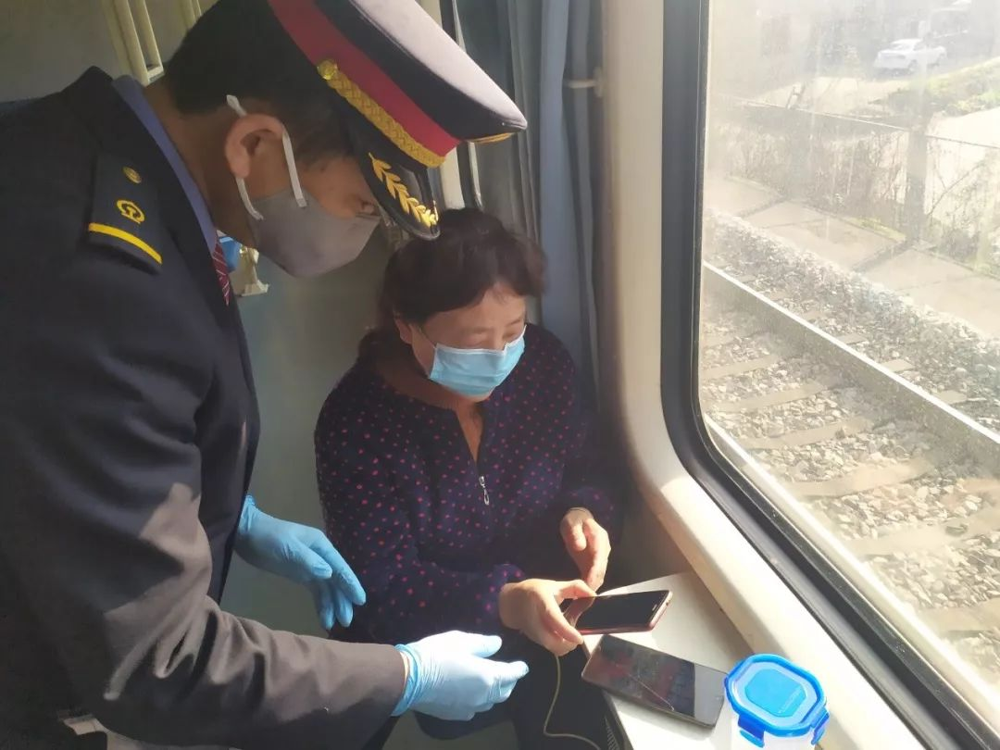
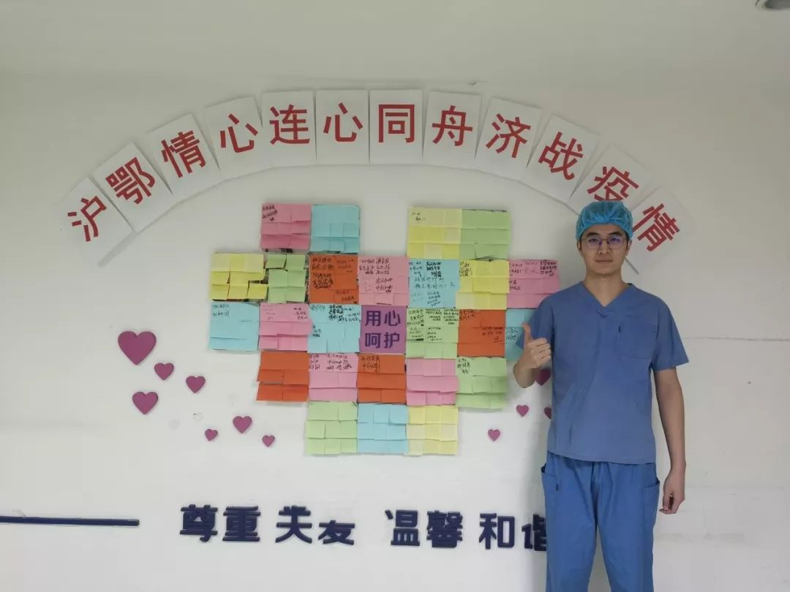
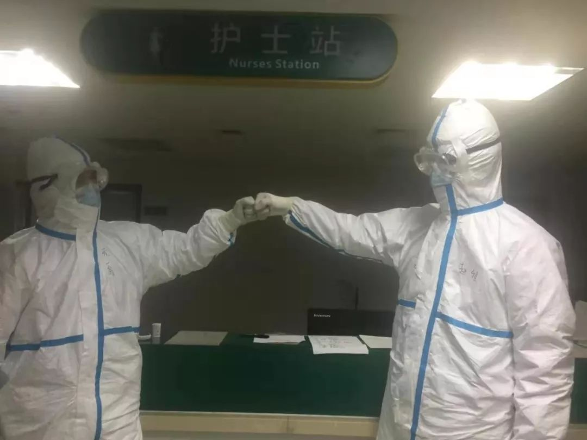

气溶胶传播说法不一，新冠病毒感染率可能为 1%，以及其他 35 条疫情新闻
原文链接 备份链接 根据丁香医生实时数据，截至 2020 年 2 月 9 日 18 时，全国累计确诊病例 37286 例，疑似病例 28942 例，新增确诊病例 2692 例，新增疑似病例 3916 例。其中，重症病例 6188 例，死亡 …

编者按：这是一对父子。父亲赵华明是铁路上海客运段京沪车队的列车长。17年前非典时期，他跑1461/1462次京沪绿皮车。今年新型冠状病毒疫情之际，他仍出乘，跑临客，去重庆。与17年前不同的是，当年在读小学的儿子赵程，如今已是上海瑞金医院北院的一名护士，目前正在武汉第三人民医院光谷院区参与新冠病毒肺炎重症患者的抢救工作。在家里喜添丁，宝宝还不满半岁时，新爷爷和新爸爸冲上了前线……
口述 | 赵华明、赵 程
整理 | 姜浩峰

赵程和同事们出征武汉 图 | 央视截屏
赵华明：出乘，不惜租房与小孙孙隔离
作为上海客运段职工，我长期在京沪车队工作。2003年非典时期，我跑北京。那时候1461/1462次是没有空调的绿皮车。服务在一线，直面过疫情，那时的我还不是列车长，一直也没有退缩。现在我作为列车长，在疫情面前，就更应该带头做好榜样，做好列车的疫情防控工作，保障旅客的安全舒适出行。这是我最大的责任。我相信，经过我们的努力，一定能战胜疫情。

2003年非典时期，铁路上海客运段职工做好出乘前防护工作 摄影 | 张锦渭

今年节后春运，赵华明列车长要求车班做好防护
回看今年春节前，我值乘上海到成都的临客时，就感觉可能有较大疫情。当时车队已经比较认真对待，段里、车队干部往返添乘，更是发了N95口罩和防护服以备不时之需。还发了体温表。
当时我测出过一个发热病人。这人从杭州上车，当我测出此人在发烧时，立即采取了隔离措施。然后与新余站值班员联系，将这位旅客交给了新余站。列车继续运行，到半夜我手机上看到新闻说，新余出现一名新冠肺炎患者。真是吓了一大跳。设想，这么一来，整趟车的旅客、我们整个车班列车员、检车、乘警，包括实习生，一共40人都要隔离14天。当年非典时期，我们同跑北京车的同事就有被隔离的。我们车班有个女实习生，和我儿子同名同姓，也叫赵程，是常州铁道高职的学生，“00后”，刚刚20岁，南京人。将心比心，如果出现什么情况，她父母能不着急吗？我马上打电话给新余站确认，还好新增病人不是我送到站方的那位，这才松口气。

赵华明为乘客测量体温
大年夜凌晨，临客到成都站。大约3点15分，我接到家里电话。妻子跟我说，儿子即将出发去武汉。我儿子今年25岁，是瑞金医院北院的一名护士。儿媳妇是他同事，也是护士。家里刚添了一个小孙孙，半岁还不到。
说老实话，我有点着急。家里是这个情况，而疫情什么情况，我在外跑车又经历过非典，大致知道一些。但定心想想，我还是支持儿子逆行武汉。一方面，我知道，他毕业两年来，一直在医院ICU重症监护室当护士，这时候就该他这样的年轻人冲到第一线；另一方面，我感觉，医院的防护设备总要强过我们铁路单位，只要自己按照规章制度操作，应该能保证安全。
儿子在家待命几天后，于年初三前往武汉。此后，我每天都会和他视频联线。譬如今天他是0点到4点的班，我就会在他下班后和他聊一下。

赵华明为到上海的旅客进行APP登记个人信息
在单位，我是老职工，又是入党积极分子，更经历过非典，我主动向车队提出，请给我加派任务。节后，我又出乘。这次临客是重庆到上海。因为疫情的缘故，旅客不多。我们严格执行规章制度，对每一位旅客都做好量体温、APP登记信息等工作。这次我跑完重庆，还要跟车到徐州。为了保证家人的安全，特别是保证小孙孙的安全，我租了间房准备自我隔离。房子是网上找的，离自己家附近的地铁一站路的距离，中介费600元，房租每月2000元，都是网上支付的，一下子借了半年。因为网上中介的原因，我和中介、房东都没见面。房东本人是福建南平人，目前不在上海，自称一时半会也不回上海。我觉得这也算一种缘分。1991年我曾在南平当兵，当时准备台海若有事是要上前线的。现在遇到情况，我想，该冲到第一线还是要往前冲……
赵程：新冠肺炎重症患者更需心理护理
我接到医院电话征求意见时，老婆就在身边。她也是我们瑞金医院北院的护士，我们是夫妻，也是同事。一句话说——什么情况，她懂的。
我妈妈也支持我前去武汉支援，只是希望我在外照顾好自己。就是家里添丁，我家小宝宝才不到6个月大。我爸爸是列车长，妈妈还没退休。好在我老婆娘家人同样很支持我去武汉，可以靠他们重点照顾宝宝。医院方面也很关心我家。我老婆现在上常日班。

赵程在穿防护服前留影
我是1月28日出发的。到达的武汉第三人民医院光谷院区，本来是个综合医院，现在改造成传染病医院。我们这批参加武汉抗疫的，瑞金医院北院有四个护士，两男两女，和其他医院的同事混编工作。比起第一批进武汉的同事当时的情况来，我们目前的排班是工作4小时，休息16小时。之前那批一开始连续工作时间很长，甚至有穿着纸尿裤上班的。我们目前的排班，也是综合考虑了人手，以及穿着隔离服无法吃饭、上厕所等情况。

医生用值班手机拍摄的赵程（右）和他同事，由于穿了防护服相认困难，大家都将自己的名字写在防护服上
休班时，我们在医院附近酒店住宿，两个人一间。酒店距离医院步行大约20分钟，不过我们一般都坐班车。酒店餐厅24小时供餐。我们有时候也在餐厅吃饭。因为餐厅严格消毒，加上人员不多，不必担心在餐厅感染。另外，也有外面商家知道我们是援鄂医疗队，给我们发货送吃的。
具体说说工作吧。我从学校毕业后，就在瑞金北院的重症监护室工作，遇到过许多危重病人。他们大多生命垂危，许多人是昏迷状态。而在武汉接触到的新冠病毒肺炎重症患者，大多数并不是这样的。他们清醒的多。从护理的角度看，我感觉新冠病毒肺炎重症患者更需要心理护理。他们喘息困难，焦虑。这些方面，我们尤其要关注，也要总结出护理经验来。

在武汉第三人民医院光谷院区护理病人的赵程
17年前非典肆虐。那时候，我还在南翔小学读2年级。现在记得的事，就是上学时校门口要量体温。我爸爸那时候跑北京车。非典的经验如今他用上了。总的来说，希望大家共同努力，赢得这场非胜不可的抗疫阻击战。
(文中图片除署名外，由采访对象提供)

征集令
《新民周刊》现面向全国征集新冠肺炎采访对象和真实故事：
如果你是参与抗击新冠肺炎疫情的医护人员或其家属，我们希望聆听你的“战疫”故事，也希望传达你的诉求。
如果你是确诊、疑似患者本人或家属，我们希望了解你和家人如何“抗疫”的过程，让外界了解你的真实经历。
如果你是疫情严重地区的普通市民，我们希望展现你的乐观，并倾听你所需的帮助。
如果你是公共服务人员或各类捐助者，我们希望看到你的“最美逆行”，记录下你的无私。
……
抗击新冠肺炎疫情，我们诚征对疫情了解的社会各界人士，提供相关线索，说出你的故事，让我们用新闻留存这一切。
《新民周刊》新冠肺炎线索征集值班编辑联系方式（添加时请简要自我介绍）：
周一：应 琛 微信号：paulineying0127
周二：金 姬 微信号：gepetta
周三：黄 祺 微信号：shenwen-2020
周四：周 洁 微信号：asyouasyou
周五：孔冰欣 微信号：kbx875055141
周六：吴 雪 微信号：shyshine1105
周日：姜浩峰 微信号：jianggeladandong
新闻是历史的底稿，你们是历史的见证者。期待你的故事、你的线索！

▼
大家还都在看这些
▼
转载请在评论区留言，获得授权！
转载时，须注明作者、出处和微信号


原文链接 备份链接 根据丁香医生实时数据，截至 2020 年 2 月 9 日 18 时，全国累计确诊病例 37286 例，疑似病例 28942 例，新增确诊病例 2692 例，新增疑似病例 3916 例。其中，重症病例 6188 例，死亡 …
原文链接 备份链接 编者按： 8天时间，一座可容纳1000张床位的医院正式落成。这就是参照2003年非典期间北京小汤山医院所建的火神山医院。明天，这所医院就将收治病人。 据悉，该医院主要救治确诊患者，开设重症监护病区、重症病区、普通病区， …
原文链接 备份链接 记者/ 魏晓涵 梁婷 韩谦 佟晓宇 实习记者/ 陈威敬 胡琪琛 编辑/杨宝璐 宋建华 医护人员严阵以待 摄影/高瞾 2019年12月30日，武汉市卫计委内部文件流出，称“武汉出现不明原因的肺炎”，与华南海鲜批发市场有 …
原文链接 备份链接 【财新网】（记者 丁捷 综合）大批从事重症医学的医护人员奔赴一线。据国家卫健委，截至2月7日，建立了16个省份支援武汉以外地市的一一对口支援关系，以一省份包一市的方式，全力支持湖北省加强病人的救治工作。驰援武汉的医护 …
原文链接 备份链接 蔡婷说：“大家都荒谬到这个程度了。” 2月5日下午，湖北省人民医院拥挤的门诊部，蔡婷排了3个小时的队。这家医院昨天做了1500份新型冠状病毒的核酸检测，43岁的蔡婷和母亲的样本，也在其中。现在，蔡婷全部心思都在这上面， …